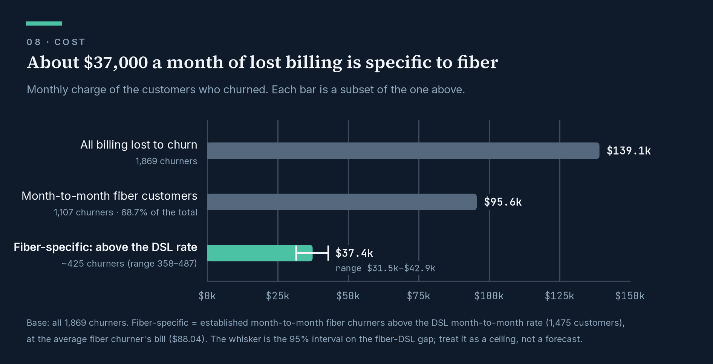
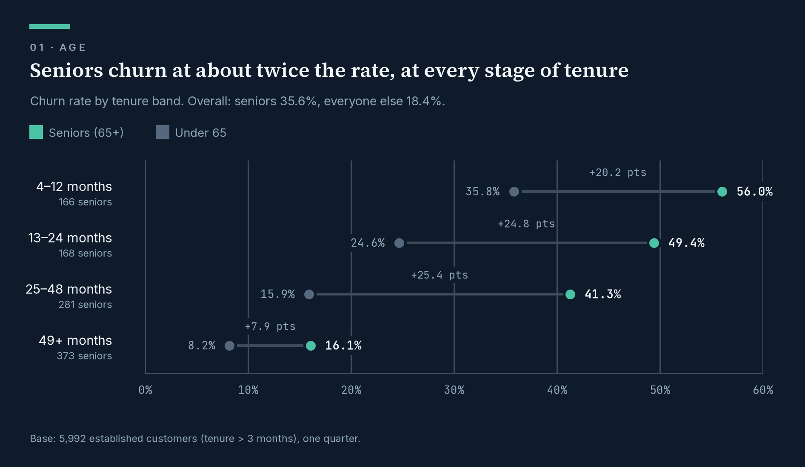
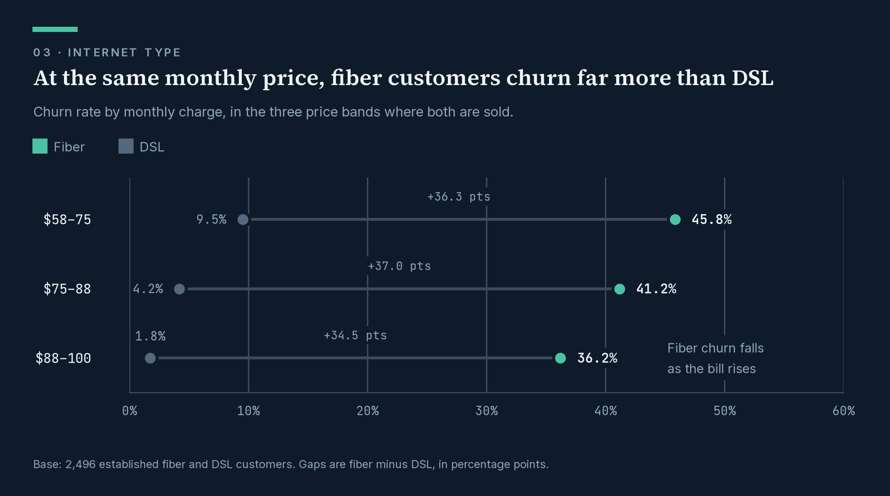
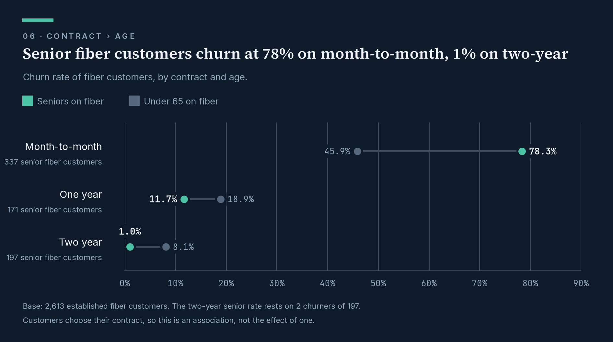

ConnectSphere churn BI
Where a telecom company’s churn actually comes from — and why cutting prices wouldn’t fix it.



At a glance
| The question | Why are a telecom company’s customers leaving, and what does it cost to do nothing? |
| What I found | Fiber customers on month-to-month contracts carry 68.7% of the monthly billing lost to churn. They leave for competitors, not over price: at the same monthly bill, fiber customers churn 34–37 points more than DSL customers. |
| What it’s worth | About $37,000 a month of lost billing is tied specifically to fiber — up to roughly $450,000 a year. |
| What I recommended | Don’t answer with discounts. Find out what competitors offer fiber customers, and test a contract offer against a control group before rolling anything out. |
| What I built | A tested data pipeline (SQL, dbt, BigQuery), the statistical analysis (Python), a written data story, and the plans and data models for a Tableau story and a Power BI dashboard. |
| Data | One quarter of a telecom customer book: 7,043 customers, 1,869 of whom left. |
Read the work
| Deliverable | Status | |
|---|---|---|
| 📄 | The data story — the full argument in six sections, from who leaves to what to do about it | Complete |
| 📊 | Tableau story — the same argument as a presented readout | Build plan · data models built and tested |
| 📈 | Power BI dashboard — self-serve analysis for repeat use | Build plan · data models built and tested |
If you have five minutes, read the data story — it is the project in the form a decision-maker would receive it.
What this project shows about how I work
I start from the decision, not the data. The story opens with what should be done, who owns it and by when. Every chart has to earn its place by moving that argument forward.
I test the obvious explanation before accepting it. Fiber is the premium product, so price looked like the answer. Comparing customers at the same monthly bill showed the opposite: the gap got bigger, not smaller. That one check turned the recommendation away from discounts.
I don’t let a good story outrun the evidence. The most striking number here — senior fiber customers on two-year contracts churn at 1.0% — rests on 2 people out of 197. The story says so. Every figure states which customers it covers, every gap has a confidence range, and I’m explicit that these are associations, not proven causes. That’s why the recommendations are tests, not rollouts.
I catch problems before they reach a dashboard. The source data marks “no internet” with the text 'none' rather than leaving it blank. Standard null handling silently dropped 1,274 customers until I traced it. I also wrote a check that fails loudly if the published numbers ever drift from the story’s.
I match the format to the audience. The same analysis becomes three things: a written story for decision-makers, a linear Tableau readout for a meeting, and a Power BI dashboard for analysts who will return to it with their own questions.
Skills demonstrated
| Skill | Where to see it |
|---|---|
| SQL and data modelling — staging and mart layers, star schema, reusable macros | models/, macros/ |
| Data quality and testing — 31 automated tests, including a story-parity check | tests/, model YAML files |
| Statistical analysis — confidence intervals, confounder adjustment, interaction tests | notebooks/Eda.ipynb |
| Data storytelling — a structured narrative ending in owned, dated recommendations | docs/story.md |
| Data visualisation — branded charts, colour-blind-safe palette validated by test | docs/img/, notebooks/story_charts.py |
| BI and dashboard design — Tableau and Power BI plans, DAX measures, themes | Tableau plan, Power BI plan |
| Documentation — every modelling decision and every analytical question logged | Decision log, analytics log |
Tools: SQL · BigQuery · dbt · Python (pandas, statsmodels, matplotlib) · Jupyter · Tableau · Power BI · DAX · Git · Quarto
The finding, in three charts
1. Seniors churn at twice the rate — at every stage of their time with the company.

2. Seven in ten seniors are on fiber, and fiber loses customers at any price. Within fiber, churn even falls as the bill rises.

3. It all bites on month-to-month contracts, where 337 senior fiber customers churn at 78.3%.

Under the hood — for technical reviewers
Pipeline
flowchart LR
A[("Raw CSVs")] --> B[("BigQuery<br/>raw tables")]
B --> C["dbt staging<br/>clean · typed · tested"]
C --> D["fct_customer_churn<br/>one row per customer"]
C --> F["dim_geography"]
D --> G["rpt_story_segments<br/>+ cost estimates"]
D --> PBI{{"Power BI<br/>dashboard"}}
F --> PBI
G --> TAB{{"Tableau<br/>story"}}
C -.-> NB["Python analysis"] -.-> S["Data story"]- One shared customer table, with a separate layer for each tool. Power BI gets a star schema to slice freely. Tableau gets pre-computed exhibits, because it cannot calculate the confidence intervals the story uses, and its numbers must match the written story to the decimal.
- Confidence intervals in SQL (Wilson and Newcombe), matching the Python analysis exactly:
macros/confidence_intervals.sql. - Both dashboards declared as dbt exposures, so the lineage shows what feeds each one:
models/marts/_exposures.yml.
Method
- The main analysis covers the 5,992 customers past their first three months. The first three months are a different population — no customer there has a “stayed” status — so they are reported separately.
- Each effect was checked against its obvious confounder with Mantel-Haenszel pooled comparisons, direct standardisation, Kitagawa decomposition and likelihood-ratio tests for interaction.
- The data is one quarter, cross-sectional: no trends, and no causal claims.
Repository
models/ staging views and marts, one YAML per model
macros/ confidence intervals
tests/ story-parity test
notebooks/ Eda.ipynb (analysis) · story_charts.py (rebuilds every chart)
docs/ the data story, both dashboard plans, the logs, charts
seeds/ the five raw CSVsRun it yourself
Needs: Python 3.13, a Google Cloud project with BigQuery, and a service-account key.
Upload the five CSVs in
seeds/to a BigQuery dataset namedtelco_churnasraw_demographics,raw_services,raw_status,raw_locationandraw_population, keeping the original column headers.Replace the GCP project ID in
models/staging/_telco__sources.yml,notebooks/Eda.ipynbandnotebooks/story_charts.py.Install and build:
python -m venv dbt_attrition source dbt_attrition/bin/activate # Windows: .\dbt_attrition\Scripts\Activate.ps1 pip install -r requirements.txt dbt deps && dbt buildAdd a
telco_churnBigQuery profile to~/.dbt/profiles.yml, and a.envwithGOOGLE_APPLICATION_CREDENTIALS=<path-to-key.json>for the notebook.
About me
I’m Adejori Eniola Emmanuel, a data analyst working across the whole path from raw data to decision: modelling it, testing it, analysing it, and explaining what it means to the people who have to act on it.